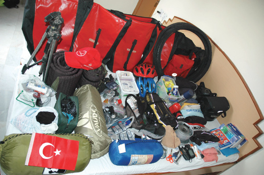

5 GECE
TÜRKİYE, 30 HAZİRAN

Türkiye, Bursa
Belki de gerçek ihtiyaçlarımız birkaç heybeye sığacak kadar azdır.
Saat sabaha karşı üçü geçmiş. Google Earth programında gözlerim ağrıyana kadar rotaya baktım.
İnci de malzeme listesini daha da küçülterek yedi çantaya eşit olarak dağıtmak için bu saate kadar uyumadı.
Ama hazırlıklar hâlâ bitmiş değil. Eksik malzemeyle yolculuk yarıda kalabilir. Bu kadar büyük bir organizasyonda yarıda kalmak asla kabul edilemez. Ayrıntılar burada, Türkiye’de halledilmeli. Çünkü şeytan ayrıntıda gizli.
Üzülecek miyim? Hayır. Üzülmek yerine, bir günde halledilebilecek işten çok daha fazlasını başarmalıyım 24 saatte. Kaybettiğimiz zamanı geri kazanmalıyım.
Eğer ilk planladığımı tarihte yola çıkabilmiş olsaydık, şu anda İran’da bir yerlerde uyuyor olacaktık. Gökyüzünde aynı parlak yıldızlar görünecekti yine. Fakat hâlâ Bursa’dayız. Evimizden bakınca, Uludağ’ın etekleri görünüyor uzaktan. Ben Himalayalar’a doğru bisiklet sürdüğümü düşünerek motive olmalıyım. Başka ulu dağlara doğru gideceğiz. Bazı ulu dağlardan aşacağız. Bu gökleri bulutlu, yamaçları çiçeklerle süslü ulu dağlar, metre metre emekle, terle, azimle ilerleyen bisikletlerimizle aşılacak. Bir bakacağız arkamızda, siluete bürünmüş bir hayal gibi kalacaklar.
İş listemiz büyük oranda kısaldı aslında. Üzerine onlarca kere not alınmış, defalarca karalanmış on sayfadan fazla yazı. Bazı yerlerini İnci yazmış, hemen fark ediliyor. Arada kalem değişmiş, kalemin rengi değişmiş. Karmaşık bir sürü not iliştirilmiş. Telefonlar not alınmış, bazı post-itler yapıştırılmış. Arada yazısından tanıyamayacağım bazı kişilerin elyazıları bile var. Dostlar yardımcı olmaya çalışmış herhalde.
Sıcaklar başladığı için gece serinliğinde daha çok iş yapabiliyorum. Daha çok yazabiliyorum. İşlerime ara verip yıldızlara bakmak için balkona çıkıyorum. Uludağ’a, yıldızlara, Bursa’ya bakıyorum. Rotamızdaki bir ülkenin gecesini hayal ediyorum. Başka bir ülkede yine aynı yıldızların altında süreceğiz. Dünya çok küçük.
Birkaç güne kadar bir dünya turu projesinin ilk ayağına başlıyoruz. Belki bir gün, kim bilir hangi yıl Güney Amerika’da, Afrika’da, And Dağları’nda, Avrupa’da süreceğiz. Bir gün yavrumuz da bize katılacak. Ailece gezeceğiz.
Hayatımızın en ulu projesi başlıyor ve daha şimdiden gitmeyi planladığımız ülkeler birer yıldız gibi parlıyor gözümüzde.